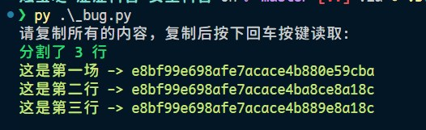
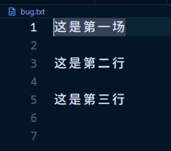
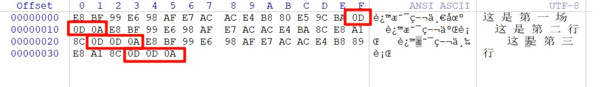
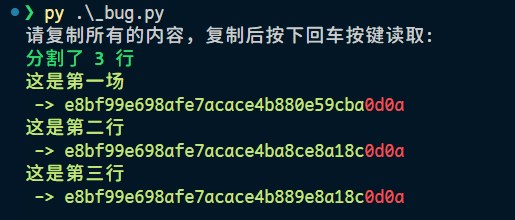
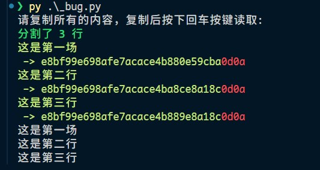
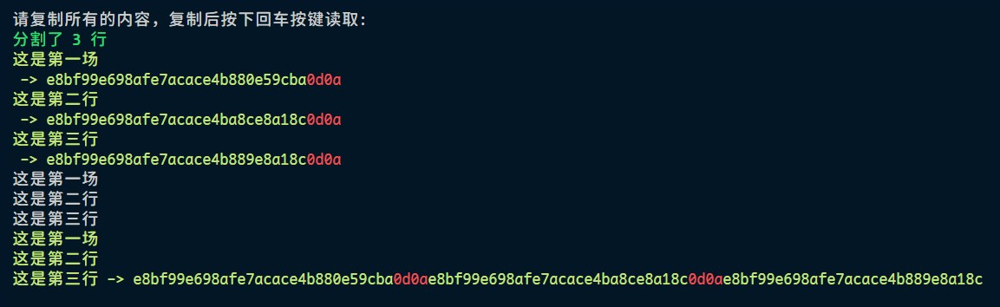
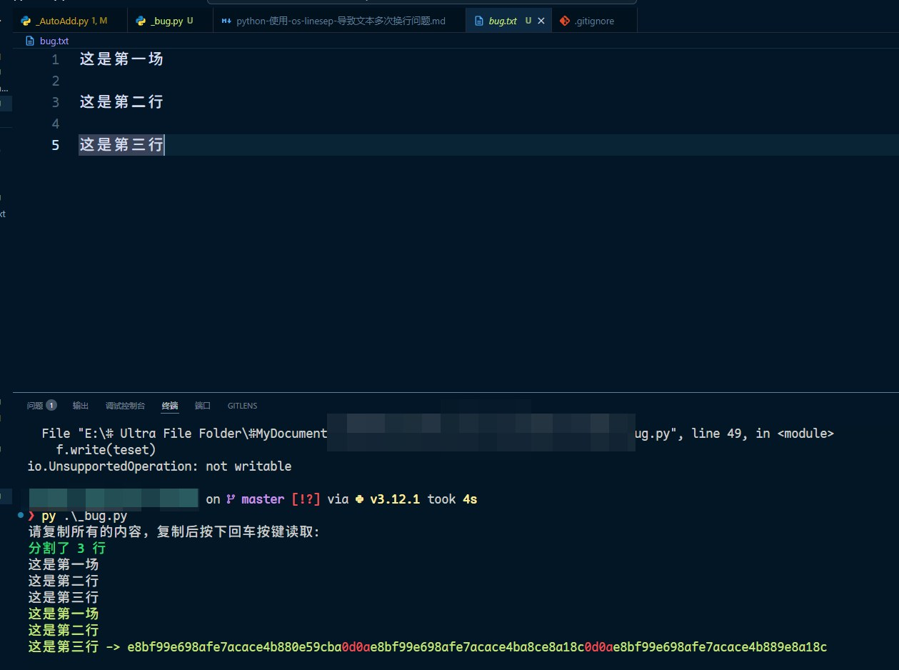
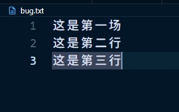

python 使用 os.linesep 导致文本多次换行问题
前置信息
关于换行符，一共有下面这几种：
| 字符 | 描述 | ASCII 16进制 |
|---|---|---|
\n |
换行符 | 0x0A |
\r |
回车符 | 0x0D |
\r\n |
回车换行符 | 0x0D 0x0A |
上面每一个换行符，都能够让文本正确换行。Linux 常用的换行符是 \n，而 Windows 默认的换行符是 \r\n，Mac 的换行符是 \r。
问题
使用如下代码，读取剪贴板，按行分割，去除每一行的换行符，然后再按行写入文本文件，换行方式使用 os.linesep，结果发现，写入的文本，每行之间又额外加了一个空行
1 | |
复制的文本是：
1 | |
运行结果：


可以看到，line 变量的结尾确实是没有换行符的。但是，写入的txt每次都是换了两行。使用 winhex 打开查看：

所有的换行符都变成了 0d 0d 0a。
把 print_hex(line) 更换成 print_hex(line + os.linesep)，下面每一个 16 进制都是即将写入到输出文件中的。

可以看到，打印的箭头之前是有换行符的，这是复制的原文本自带的换行符。然后被函数统一成了 CRLF 也就是 0d 0a。
那么尝试直接在终端打印 print(os.linesep.join(lines))，也就是把整个准备输出到文件中的内容打印出来。

结果是正常的。
打印 16 进制 print_hex(os.linesep.join(lines))，也就是计算整个将要写入到文件中的内容所对应的 16 进制。

也是正常的！0d 每次只出现过一次。也就是说，在二进制层面，写入的文件应当是完全正确的 0d 0a 换行符。
那么尝试直接写入这个字符串
1 | |
依然不行！还是多个换行符 0d 0d 0a

winhex 查看，依然是写入了两次 0d
解决方法 1
在 Python 中写入文件时出现两次换行符（0D 0D 0A）的问题，主要是由于文本模式（’w’）和行结束符转换机制共同作用导致的。
在 Windows 系统中，Python 文本模式默认会将 \n（0A）转换为 \r\n（0D 0A）
如果输入字符串 teset 中已经包含 \r\n（0D 0A），Python 会将其中的 \n（0A）再次转换为 \r\n（0D 0A），最终导致 \r\r\n（0D 0D 0A）。
最直接的解决方法是使用二进制模式（wb）写入文件，避免 Python 进行行结束符转换：
1 | |

解决方法 2
指定 newline='' 参数：
1 | |